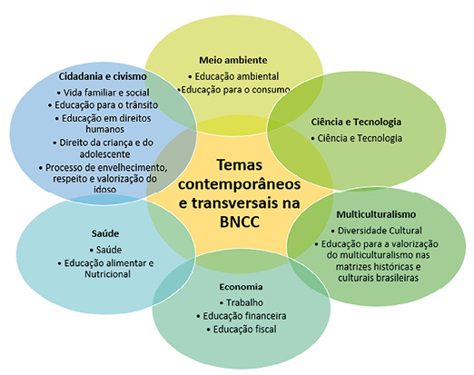

- Cintia Bagatin Lapa
Licenciada em Matemática pela Universidade Federal do Paraná (UFPR). Mestre em engenharia de produção: Mídia e Conhecimento pela Universidade Federal de Santa Catarina (UFSC). Professora do Ensino Superior, tendo lecionado muitos anos nos ensinos Fundamental e Médio. Assessora editorial, prestando consultoria para diversas editoras na edição de conteúdo de matemática voltado para os ensinos Fundamental e Médio.
Curitiba, 2022 • 2.a edição
manual
digital-interativo
do professor
©COPYRIGHT - 2022 - Terra Sul Editora Eireli. É proibida a reprodução, mesmo parcial, por qualquer processo eletrônico, reprográfico, etc., sem autorização por escrito da autora e da editora.
Rua Ricardo Beltrami, 82 • Bom Retiro
CEP 80520-570 • Curitiba • PR • Brasil
Fone/Fax: (41) 3253-0077
E-mail: terrasul@terrasuleditora.com.br
Dados internacionais de catalogação na publicação
Bibliotecária
responsável: Natália Vicente Montanha Teixeira (CRB-9/1642)
Lapa, Cintia Bagatin.
Matemática : contexto e prática : 8º ano : manual digital-interativo do professor / Cintia Bagatin Lapa ; ilustradores : Reinaldo Rosa e Sérgio Bonfim dos Santos. – 2. ed. – Curitiba, PR : Terra Sul Editora, 2022.
280 p. : il. ; 28 cm.
ISBN 978-65-5645-201-2
1. Matemática (Ensino fundamental) – Estudo e ensino.
I. Rosa, Reinaldo. II. Santos, Sérgio Bonfim dos. III. Título.
CDD (22ª ed.)
372.7
coordenação editorial
Jane Gonçalves
ILUSTRAÇãO
Reinaldo Rosa
Sérgio Bonfim dos Santos
CONSULTORIA
Ana Paula Gugelmin
ICONOGRAFIA
Raquel Deliberali
Victor Kubis
REVISÃO
Ariane Roldan Melchior
Eliane Peixoto de Lima
Silmara Lídia Moraes Arcoverde
Sônia Maria Duarte
Thais dos Santos Pires
EDITORAÇÃO ELETRÔNICA
Márcio Guesser
CARTOGRAFIA
Elisabeth Gislaine Rathunde Lopes
impressão
Carta ao Professor
Caro(a) colega,
Certa vez li em um livro intitulado Carta a um jovem professor, de Philippe Meirieu, o seguinte: “Tornar-se professor é, de fato, investir no futuro, pois significa trabalhar, cotidianamente, nas aprendizagens. Seria realmente um grande equívoco perder as esperanças no futuro quando na verdade todo nosso trabalho consiste em convencer cada aluno de que, contra qualquer fatalidade, existe a possibilidade de um futuro diferente para ele. Um futuro no qual, desde que tenha êxito na aprendizagem, ele poderá compreender-se melhor e compreender o mundo: assumir, prolongar e assim subverter a própria história” (2006, p. 85).
Este pequeno parágrafo fez-me refletir sobre a importância que temos no caminho de um estudante, possibilitando a ele, por meio da educação, construir um futuro diferente. Quando escolhemos ser professores, assumimos o compromisso de contribuir para uma nova perspectiva de vida a milhares de alunos que passarão por nossas mãos. Estamos apostando no futuro!
Assim como aconteceu comigo, tenho certeza de que um dia um professor serviu de inspiração a você, mostrando-lhe o respeito, a responsabilidade e o comprometimento com a educação. O quanto é importante os estudantes entrarem em uma sala de aula e enxergar a paixão de ensinar nos olhos de um professor.
Foi por esta paixão em ensinar que compartilho com você esta coleção, escrita para contribuir com o ensino da Matemática em nosso país, para que juntos possamos fazer a diferença na vida de muitos estudantes!
A autora
Apresentação da obra
Esta coleção foi estruturada de modo que auxilie os alunos no desenvolvimento das competências e habilidades necessárias à compreensão de situações de sua realidade e à atuação diante das demandas da sociedade atual tornando os estudantes cidadãos críticos.
Iniciando com conceitos mais básicos e aumentando o grau de complexidade gradativamente, a coleção trabalha com conceitos de contagem, comparação, quantificação de grandezas, operações fundamentais e seus algoritmos, cálculo mental, estimativas, medições até os conceitos de funções, trigonometria, probabilidade, dentre outros.
Nos quatro volumes, os conceitos são articulados de modo que permitam a exploração das cinco unidades temáticas propostas na BNCC: Números, Álgebra, Geometria, Grandezas e medidas e Probabilidade e estatística.
Estrutura da coleção
A coleção é composta por 4 volumes estruturados em unidades, divididas em capítulos. Nestas unidades, os conceitos são articulados de modo a explorar os vários campos da matemática escolar.
A obra apresenta a seguinte estrutura: Abertura da unidade (Converse); Conteúdos (Troca de ideias); Atividades (Encontre soluções); Probabilidade e estatística; e Relembre.
Ao longo do trabalho, a coleção incentiva o uso da calculadora, o trabalho em grupo, os cálculos mentais, as resoluções de situações-problemas, etc. A seguir, são apresentadas as seções e os ícones presentes nos quatro volumes.
Conheça as seções do livro do aluno
Converse
Presente na abertura das unidades, nela são propostos questionamentos mais abrangentes sobre os conceitos estudados na unidade. É um momento de discussão para levantamento sobre os conhecimentos prévios dos estudantes. Caso as questões não sejam respondidas prontamente, não há problemas, elas poderão ser retomadas após o estudo. É possível solicitar aos alunos que façam uma pesquisa para responder essas questões e outras que eventualmente possam surgir.


Encontre soluções
São propostas atividades, situações-problemas, jogos, e outros recursos para que os estudantes revejam os conceitos que foram estudados. Dessa forma, poderão criar estratégias para resolver as situações apresentadas, desenvolvendo iniciativa, imaginação e criatividade. Poderão avaliar os resultados e verificar se são ou não razoáveis, levando-os a compreender e transmitir ideias matemáticas, por escrito ou oralmente, desenvolvendo a capacidade de argumentação.
As resoluções e também os comentários sobre as questões propostas são apresentados nesta seção. Ao final do livro do aluno, são encontradas as respostas por meio das quais eles poderão verificar se realizaram as questões propostas de forma correta.
Em alguns momentos é proposto aos alunos que formulem novos problemas, baseando-se na reflexão e no questionamento sobre o que ocorreria se alguma condição fosse modificada ou se algum dado fosse acrescentado ou retirado do problema proposto.


Probabilidade e estatística
Hoje em dia, questões relativas a dados da realidade física ou social que precisam ser coletados, selecionados, organizados, apresentados e interpretados criticamente são cada vez mais relevantes para a formação integral do aluno como cidadão da sociedade contemporânea. Nessa perspectiva, esta seção permite que questões relevantes sejam discutidas e que habilidades referentes à estatística e à probabilidade sejam desenvolvidas. Por meio de discussões, trabalhos em duplas ou individuais, pretende-se que os estudantes possam utilizar a argumentação matemática apoiada em vários tipos de raciocínio.


Relembre
Ao final de cada unidade são apresentadas atividades e situações-problemas para que os estudantes possam revisar os conceitos estudados. Neste momento, eles poderão fazer uma autoavaliação para saber quais os conceitos que precisam ser revistos.


Conheça os ícones
Troca de ideias
Neste momento, são propostas situações para iniciar uma discussão sobre o tema que será estudado no capítulo. São situações mais específicas que as questões apresentadas na abertura da unidade na seção “Converse”. Neste momento, os estudantes poderão trocar ideias com outros colegas e com o professor, permitindo um resgate dos conhecimentos prévios que eles possuem sobre o assunto, ou ainda, estimulando a curiosidade para o que será estudado. É um momento que permite o levantamento de hipóteses que poderão ser verificadas posteriormente.
Calcule mentalmente
Neste momento, pretende-se estimular o cálculo mental e também o desenvolvimento de estratégias para que os estudantes possam resolver uma situação-problema. O cálculo mental favorece a aprendizagem tanto do ponto de vista individual quanto do coletivo.
Calculadora
Este ícone indica o uso da calculadora como um recurso pedagógico para ajudar a resolver a situação-problema apresentada. Em determinados momentos são apresentadas também estratégias de como utilizar a calculadora para o cálculo envolvendo os conceitos que estão sendo estudados.
Jogos
Em alguns momentos, convidamos os estudantes a realizarem atividades envolvendo jogos com os conceitos que estão sendo abordados. Os jogos podem auxiliar no desenvolvimento de habilidades como observação, análise, levantamento de hipóteses, busca de suposições, reflexão, tomada de decisão, argumentação e organização, além de proporcionar aos alunos um momento de interação e, consequentemente, de cooperação e respeito mútuo entre os participantes.
Em duplas
Este ícone sugere que as atividades em que ele aparece sejam resolvidas em duplas, permitindo assim um momento de discussão, argumentação e registro da situação proposta.
Desafio
Neste ícone são apresentadas questões da Olimpíada Brasileira de Matemática e também da Olimpíada Brasileira de Matemática das Escolas Públicas. O objetivo é que os alunos percebam a relação dos conceitos que estão sendo estudados com os conceitos que aparecem em competições como essas. Pretende-se estimular os estudantes a participarem dessas competições, mostrando a eles que todos podem participar, incentivando assim o estudo da matemática e ajudando a revelar talentos.
Sumário
-
O ensino da Matemática do 6.º ao 9.º ano VIII
-
Introdução VIII
Competências específicas de Matemática para o Ensino Fundamental VIII
Competências gerais da Educação Básica IX
Temas contemporâneos e transversais na BNCC X
Sugestões de leitura sobre Temas Contemporâneos Transversais XII
A história da Matemática XIII
Sugestões de livros sobre a história da Matemática XIII
O uso das novas tecnologias XIV
Sugestões de livros sobre o uso das tecnologias na educação XVI
Jogos XVI
Sugestões de livros sobre jogos XVI
Formulação e resolução de problemas XVII
Sugestões de livros sobre formulação e resolução de problemas XVIII
Avaliação XIX
Sugestões de livros sobre avaliação XXIII
A importância da formação continuada do professor XXIII
Indicações de sites XXIII
Indicações de livros XXV
Referências XXX
Sugestões de leitura XXXII
Quadro de conteúdos XXXIII
Habilidades abordadas no 8.° ano XXXV
Cronograma de conteúdos XXXVIII
Orientações específicas ao Livro do aluno 1
O ensino da Matemática do 6.º ao 9.º ano
Introdução
Desde os tempos mais antigos, a Matemática foi desenvolvida ancorada na resolução de problemas. Dessa forma, os estudantes devem construir o conhecimento matemático a fim de aplicar e adaptar estratégias apropriadas que os permitam usar representações para modelar e interpretar fenômenos físicos, sociais e matemáticos.
É necessário que, ao aprender Matemática, o aluno possa desenvolver o pensamento matemático para decidir se a resposta encontrada na solução de um determinado problema faz sentido. Para isso, ele precisa desenvolver a capacidade de apresentar e justificar suas ideias por meio de argumentos lógicos.
Falar, escrever, descrever e explicar ideias matemáticas são competências que podem ser desenvolvidas de forma articulada com os conteúdos estudados do 6.º ao 9.º ano.
Na sociedade em que vivemos, a Matemática está presente nas mais variadas áreas do saber e nas diversas culturas. Em um momento permeado por tecnologia e que a quantidade de informação em que temos acesso é crescente, desenvolver o conhecimento matemático torna-se primordial, tanto para o desenvolvimento pessoal quanto para formação de futuros profissionais capazes de criarem estratégias, terem confiança em suas tomadas de decisões, serem criativos e saberem trabalhar coletivamente enfrentando novos desafios que possam surgir.
Uma das preocupações no ensino da Matemática é atribuir significados aos conceitos que estão sendo estudados. Dessa forma a contextualização e a interdisciplinaridade permitem estabelecer uma articulação dos conceitos estudados com situações práticas e necessidades sociais, além da articulação com outras áreas do saber científico e tecnológico. Porém não podemos nos esquecer das conexões internas que precisam ser estabelecidas entre os próprios conceitos matemáticos, permitindo atribuir significados entre eles.
Assim, no processo de ensino e aprendizagem, os conceitos matemáticos sempre que possível devem ser abordados por meio de situações-problema, levando o aluno a desenvolver estratégias e métodos para resolvê-las, permitindo-lhe que formule hipóteses, explique a resolução e possa analisar o resultado.
Dessa forma, o ensino da Matemática no ambiente escolar pode contribuir para formação de cidadãos preparados para enfrentar a sociedade em que vivem, desenvolvendo capacidades que permitam a compreensão e a transformação da realidade.
Em articulação com as competências gerais da Educação Básica o componente curricular de Matemática deve garantir aos alunos o desenvolvimento das seguintes competências específicas:
Competências específicas de Matemática para o Ensino Fundamental
- Reconhecer que a Matemática é uma ciência humana, fruto de necessidades e preocupações de diferentes culturas, em diferentes momentos históricos, e é uma ciência viva, que contribui para solucionar problemas científicos e tecnológicos e para alicerçar descobertas e construções, inclusive com impactos no mundo do trabalho.
- Desenvolver o raciocínio lógico, o espírito de investigação e a capacidade de produzir argumentos convincentes, recorrendo aos conhecimentos matemáticos para compreender e atuar no mundo.
- Compreender as relações entre conceitos e procedimentos dos diferentes campos da Matemática (Aritmética, Álgebra, Geometria, Probabilidade e estatística) e de outras áreas do conhecimento, sentindo segurança quanto à própria capacidade de construir e aplicar conhecimentos matemáticos, desenvolvendo a autoestima e a perseverança na busca de soluções.
- Fazer observações sistemáticas de aspectos quantitativos e qualitativos presentes nas práticas sociais e culturais, de modo a investigar, organizar, representar e comunicar informações relevantes, para interpretá-las e avaliá-las crítica e eticamente, produzindo argumentos convincentes.
- Utilizar processos e ferramentas matemáticas, inclusive tecnologias digitais disponíveis, para modelar e resolver problemas cotidianos, sociais e de outras áreas de conhecimento, validando estratégias e resultados.
- Enfrentar situações-problema em múltiplos contextos, incluindo situações imaginadas, não diretamente relacionadas com o aspecto prático-utilitário, expressar suas respostas e sintetizar conclusões, utilizando diferentes registros e linguagens (gráficos, tabelas, esquemas, além de texto escrito na língua materna e outras linguagens para descrever algoritmos, como fluxogramas e dados).
- Desenvolver e/ou discutir projetos que abordem, sobretudo, questões de urgência social, com base em princípios éticos, democráticos, sustentáveis e solidários, valorizando a diversidade de opiniões de indivíduos e de grupos sociais, sem preconceitos de qualquer natureza.
- Interagir com seus pares de forma cooperativa, trabalhando coletivamente no planejamento e desenvolvimento de pesquisas para responder a questionamentos e na busca de soluções para problemas, de modo a identificar aspectos consensuais ou não na discussão de uma determinada questão, respeitando o modo de pensar dos colegas e aprendendo com eles.
(BRASIL, 2017, p. 265)
Além das competências específicas da Matemática, a BNCC prevê o desenvolvimento de dez competências gerais como compromisso da educação brasileira com os direitos de aprendizagem e desenvolvimento dos alunos.
Competências gerais da Educação Básica
- Valorizar e utilizar os conhecimentos historicamente construídos sobre o mundo físico, social, cultural e digital para entender e explicar a realidade, continuar aprendendo e colaborar para a construção de uma sociedade justa, democrática e inclusiva.
- Exercitar a curiosidade intelectual e recorrer à abordagem própria das ciências, incluindo a investigação, a reflexão, a análise crítica, a imaginação e a criatividade, para investigar causas, elaborar e testar hipóteses, formular e resolver problemas e criar soluções (inclusive tecnológicas) com base nos conhecimentos das diferentes áreas.
- Valorizar e fruir as diversas manifestações artísticas e culturais, das locais às mundiais, e também participar de práticas diversificadas da produção artístico-cultural.
- Utilizar diferentes linguagens – verbal (oral ou visual-motora, como Libras, e escrita), corporal, visual, sonora e digital –, bem como conhecimentos das linguagens artística, matemática e científica, para se expressar e partilhar informações, experiências, ideias e sentimentos em diferentes contextos e produzir sentidos que levem ao entendimento mútuo.
- Compreender, utilizar e criar tecnologias digitais de informação e comunicação de forma crítica, significativa, reflexiva e ética nas diversas práticas sociais (incluindo as escolares) para se comunicar, acessar e disseminar informações, produzir conhecimentos, resolver problemas e exercer protagonismo e autoria na vida pessoal e coletiva.
- Valorizar a diversidade de saberes e vivências culturais e apropriar-se de conhecimentos e experiências que lhe possibilitem entender as relações próprias do mundo do trabalho e fazer escolhas alinhadas ao exercício da cidadania e ao seu projeto de vida, com liberdade, autonomia, consciência crítica e responsabilidade.
- Argumentar com base em fatos, dados e informações confiáveis, para formular, negociar e defender ideias, pontos de vista e decisões comuns que respeitem e promovam os direitos humanos, a consciência socioambiental e o consumo responsável em âmbito local, regional e global, com posicionamento ético em relação ao cuidado de si mesmo, dos outros e do planeta.
- Conhecer-se, apreciar-se e cuidar de sua saúde física e emocional, compreendendo-se na diversidade humana e reconhecendo suas emoções e as dos outros, com autocrítica e capacidade para lidar com elas.
- Exercitar a empatia, o diálogo, a resolução de conflitos e a cooperação, fazendo-se respeitar e promovendo o respeito ao outro e aos direitos humanos, com acolhimento e valorização da diversidade de indivíduos e de grupos sociais, seus saberes, identidades, culturas e potencialidades, sem preconceitos de qualquer natureza.
- Agir pessoal e coletivamente com autonomia, responsabilidade, flexibilidade, resiliência e determinação, tomando decisões com base em princípios éticos, democráticos, inclusivos, sustentáveis e solidários.
(BRASIL, 2017, p. 9-10)
Temas contemporâneos e transversais na BNCC
A preocupação de incluir no currículo escolar temas sociais não vem de hoje e, nesse sentido, com a ampliação da BNCC em 2018, foram estabelecidos os Temas Contemporâneos Transversais (TCTs) que são abordados durante a coleção de forma articulada com os conteúdos e sempre que possível de forma contextualizada.
Dessa maneira, algumas atividades, pesquisas e análises de notícias, por exemplo, podem contemplar os temas envolvendo outras áreas do conhecimento. Além das atividades propostas, também abordaremos nas orientações ao professor onde é estimulada não só no decorrer do trabalho com as atividades, mas também em uma seção de probabilidade e estatística na qual, de maneira geral, procuramos abordar temas de mais significância aos alunos.
A seguir, apresentamos os temas contemporâneos e transversais indicados pela BNCC.

Meio ambiente
- Educação ambiental – Esse tema visa abordar os problemas que envolvem o ambiente, provocando nos estudantes reflexões em busca de melhorias em sua realidade. Por ser um tema mais próximo à realidade dos estudantes, é possível estimular discussões e troca de ideias em sala de aula a fim de buscar soluções para a preservação do meio ambiente, como na reciclagem de material, separação do lixo para destino correto, reutilização do que seria jogado fora, dentre outras práticas.
- Educação para o consumo – Esse tema visa abordar uma preocupação mundial a respeito do fim de recursos do planeta. Dessa forma, nossa intenção é trazer notícias e informações para que os estudantes possam refletir sobre suas escolhas no dia a dia, de modo que se tornem cidadãos críticos em relação aos seus direitos e deveres. Esse tema, em algumas situações, é abordado de forma simultânea à educação financeira e na educação ambiental.
Ciência e tecnologia
- Ciência e tecnologia – Esse tema visa permitir aos estudantes perceberem os impactos positivos e negativos na sociedade que a ciência e a tecnologia exercem sobre os aspectos: social, cultural, econômico e ambiental. Esse tema possibilita compreender como nos relacionamos com o ambiente e com os outros seres vivos observando a constante evolução das regularidades e dos padrões.
Multiculturalismo
- Diversidade cultural – Esse tema visa abordar a multiplicidade etnocultural brasileira. Dessa forma o trabalho com unidades de medidas, variedade linguística, diferenças étnicas e religiosas é abordado em nosso material contribuindo no entendimento que é necessário uma convivência harmoniosa e justa tanto no ambiente escolar quanto em sociedade com todas as culturas.
- Educação das relações étnico-raciais e ensino de história e cultura afro-brasileira, africana e indígena – Esse tema visa abordar a valorização à diversidade de grupos étnicos e culturas do país. Trazendo assuntos de diversas culturas promovendo o debate contra o preconceito e injustiças, promovendo a busca por uma sociedade igualitária.
Economia
- Educação financeira e fiscal – Esse tema visa abordagens que estimulam atitudes cidadãs para um consumo consciente e que tenham consciência para onde vão nossos impostos, a fim de exigir a melhoria de serviços públicos ofertados. A educação financeira pode ser abordada juntamente com educação ambiental e educação para o consumo.
- Trabalho – Esse tema visa abordar a importância do estudo e o impacto dele na vida profissional e na vida particular das pessoas objetivando maior distribuição de renda no país. Também é importante que os estudantes percebam que o trabalho não é apenas para fonte de renda, mas também para seu crescimento pessoal.
Saúde
- Saúde – Esse tema visa abordar a conscientização para uma adequação dos hábitos: alimentar, físico, social e cultural dos estudantes. Dessa forma, assuntos como: estilo de vida, saneamento básico, poluição, são abordados por meio de atividades. Nesse tema o importante é que os alunos entendam a saúde como um direito incentivando seu autocuidado e ao cuidado de seus familiares.
- Educação alimentar e nutricional – Esse tema visa, de forma concomitante com o tema da saúde, tornar mais natural a abordagem de hábitos saudáveis e de forma a atuar ativamente na qualidade de vida do aluno e de seus familiares.
Cidadania e civismo
- Vida familiar e social – Esse tema visa abordar a relação dos estudantes com seus familiares, observando as diferentes gerações e suas histórias, visando a desconstruir preconceitos. A diversidade cultural também pode ser abordada juntamente com esse tema por se tratar de um país com diversas estruturas familiares e com origens distintas.
- Educação para o trânsito – Esse tema visa abordar situações reais que podemos encontrar em notícias e dados estatísticos presentes em sites governamentais. Esse tema é de grande importância social e traz reflexões de mobilidade em grandes cidades.
- Educação em direitos humanos – Esse tema visa ao desenvolvimento do senso de justiça, igualdade e democracia dos estudantes. É importante estimular o senso crítico e permitir o acesso de todos aos principais direitos que devem ser garantidos. Sempre que possível, é importante criar debates para a reflexão do tema aproximando à realidade dos estudantes.
- Direitos da criança e do adolescente – Esse tema visa tratar sobre o Estatuto da Criança e do Adolescente (ECA). A valorização dos direitos da criança e do adolescente pode ser abordada por meio de temas como a prevenção do trabalho infantil e da valorização da diversidade cultural de crianças e adolescentes. Também são abortados partes da lei com a finalidade de promover a reflexão e discussão de seus significados.
- Processo de envelhecimento, respeito e valorização do idoso – Esse tema visa tratar a respeito do Estatuto do Idoso, aprovado em 2003, bem como o respeito, a valorização da autonomia, da integração e da participação efetiva dos idosos na sociedade. É importante promover a sensibilização por parte dos estudantes a respeito do valor das pessoas idosas compartilhando suas memórias e experiências.
Sugestões de leitura sobre Temas Contemporâneos Transversais:
- ALMEIDA, Fabiana Cezário de. Os livros didáticos de Matemática para o Ensino Fundamental e os Temas Contemporâneos Transversais: realidade ou utopia?. Dissertação (Mestrado) – Universidade Estadual Paulista. Faculdade de Ciências, Bauru, 2007.
- BRASIL. Temas Contemporâneos Transversais na BNCC: proposta de práticas de implementação. Ministério da Educação. 2019. Disponível em: http://basenacionalcomum.mec.gov.br/images/implementacao/guia_pratico_temas_contemporaneos.pdf. Acesso em: 28 mar. 2022.
- CABRAL, Cristiane da Silva; BRANDÃO, Elaine Reis. Gravidez na adolescência, iniciação sexual e gênero: perspectivas em disputa. Cad. Saúde Pública, v. 36, n. 8, ago. 2020. Disponível em: https://www.scielosp.org/article/csp/2020.v36n8/e00029420/. Acesso em: 28 mar. 2022.
- FÃO, Josiele Maria et al. A importância da educação ambiental nas escolas: um estudo nas escolas de Ensino Fundamental de Frederico Westphalen/RS. RELISE, v. 5, n. 1, p. 108-123, jan. /fev. 2020. Disponível em: http://www.relise.eco.br/index.php/relise/article/view/294/302#. Acesso em: 28 mar. 2022.
- LIBERATO, Antônio Carlos Teixeira. Empreendedorismo na escola pública: despertando competências, promovendo a esperança. Biblioteca SEBRAE. 2007. Disponível em: https://bis.sebrae.com.br/bis/download.zhtml?t=D&uid=3CBF34B0D06A6941832572B1006F3722. Acesso em: 28 mar. 2022.
- MORAES, Mara Sueli Simão et al. Temas Político-Sociais/Transversais na Educação Brasileira: o discurso visa à transformação social?. Reflexões da disciplina Temas Contemporâneos Transversais em Educação. Faculdade de Ciências. UNESP. Bauru, 2002.
- RAMOS, Flavia Pascoal; SANTOS, Ligia Aparo da Silva; REIS, Amélia Borba Costa. Educação alimentar e nutricional em escolares: uma revisão de literatura. Cad. Saúde Pública. Rio de Janeiro, v. 29, n. 11, p. 2147-2161, nov. 2013. Disponível em: https://www.scielo.br/pdf/csp/v29n11/03.pdf. Acesso em: 25 mar. 2021.
- VASCONCELOS, Natália Cordeiro de. Temas contemporâneos e transversais na BNCC: as contribuições da transdisciplinaridade. Dissertação (Mestrado em Educação) – Universidade Católica de Brasília. Brasília. 2019. Disponível em: https://bdtd.ucb.br:8443/jspui/bitstream/tede/2661/2/NataliadeVasconcelosCordeiroDissertacao2019.pdf. Acesso em: 28 mar. 2022.
A história da Matemática
Quando pensamos em história da Matemática, uma pergunta nos vem à mente: quando, onde e como começou a Matemática? Essa não é uma pergunta fácil de ser respondida, porém os registros que temos hoje em dia podem nos dar pistas e ajudar a esclarecer um pouco como se deu esse desenvolvimento. Segundo fontes históricas, o conceito de número é o mais antigo na Matemática, e sua origem remete à antiguidade pré-histórica. Afirmações sobre a origem da aritmética ou da geometria são arriscadas de serem feitas, pois somente após o homem ser capaz de pôr seus registros e pensamentos em forma escrita é que foi possível então obter informações mais precisas.
Porém, sabemos que a Matemática teve sua origem na resolução de problemas. Todo o seu desenvolvimento, no decorrer dos tempos e ainda nos tempos atuais, estão relacionados à busca de novas soluções para situações que precisam ser resolvidas. Dessa forma, o conhecimento de como se deu esse desenvolvimento no decorrer dos tempos e do contexto histórico da época em que ocorreram pode nos auxiliar a entender o presente. Segundo a BNCC, é importante incluir outras áreas do conhecimento e da própria história da Matemática como contexto significativo para os alunos, pois isso pode despertar interesse para a aprendizagem.
Nesta coleção, são apresentados matemáticos que dedicaram sua vida ao estudo desta ciência e também fatos históricos sobre a Matemática. Além das informações que constam no livro do aluno, você também encontrará outras informações no manual específico de cada volume. A seguir, são apresentadas sugestões de livros que podem auxiliá-lo a conhecer um pouco mais da história fascinante da Matemática.
Sugestões de livros sobre a história da Matemática
- BOYER, Carl B. História da Matemática. São Paulo: Edgard Blücher, 1996.
- EUCLIDES. Os elementos. Tradução e introdução de Irineu Bicudo. São Paulo: UNESP, 2009.
- EVES, Howard. Introdução à história da Matemática. Tradução de Hygino H. Domingues. Campinas: Unicamp, 2002.
- GARBI, Gilberto. A rainha das ciências: um passeio pelo maravilhoso mundo da Matemática. São Paulo: Livraria da Física, 2006.
- GUELLI, Oscar. Contando a história da Matemática. São Paulo: Ática. Vários volumes, 1998.
- MENEZES, Josinalva Estácio (org.). Didática da Matemática: evolução histórica das ideias que Influenciaram o ensino de Matemática no Brasil. Recife: Universitária da UFPE, 2007. v. 2. (Contexto Matemático).
- MIGUEL, Antonio et al. História da Matemática em atividades didáticas. 2. ed. São Paulo: Editora Livraria da Física, 2009.
- PICKOVER, Clifford A. O livro da Matemática: de Pitágoras à 57.ª dimensão, 250 marcos da história da Matemática. Tradução de Carlos Carvalho. Kerkdried, Holanda: Librero, 2011.
- ROONEY, Anne. A história da Matemática: desde a criação das pirâmides até a exploração do infinito. São Paulo: M. Books, 2012.
- SILVA, Clóvis Pereira da. A Matemática no Brasil: uma história de seu desenvolvimento. Curitiba: UFPR, 1992.
- SINGH, Simon. O último teorema de Fermat. Tradução de Jorge Luiz Calife. Rio de Janeiro: Record, 2002.
- SINGH, Simon. O livro dos códigos: a ciência do sigilo - do Antigo Egito à criptografia quântica. Tradução de Jorge Luiz Calife. Rio de Janeiro: Record, 2007.
- SOUZA, Cícero Monteiro; MENEZES, Josinalva Estácio (org.). Tópicos de história, recreações e didática da Matemática. Recife: Editora Universitária da UFPE, 2007.
O uso das novas tecnologias
Vivemos em uma sociedade em que a tecnologia está presente no cotidiano de todos. Assim, entendemos que educação e tecnologia são ferramentas que podem proporcionar a construção do conhecimento, preparando-o para desenvolver novas tecnologias e novos conhecimentos. Cabe então à comunidade escolar propiciar um ambiente que possa inserir o aluno neste cenário. Precisamos fazer com que a tecnologia seja uma aliada no processo de ensino e aprendizagem.
O uso de calculadoras, computadores e outros recursos tecnológicos devem ser aproveitados para potencializar o ensino de conceitos, extrapolando dessa forma o uso do livro didático. Em muitas situações, o uso dessas tecnologias permite que o aluno compreenda com maior facilidade um determinado conceito, além de propiciar ao aluno seu aprimoramento pessoal e contribuir para sua posterior inserção no mercado de trabalho.
O uso das tecnologias no ensino da Matemática não deve ser visto como mais uma coisa que deve ser feita, mas sim como uma ferramenta que deve ser incorporada ao processo. Uma pesquisa realizada na web, por exemplo, pode apresentar informações importantes sobre a Matemática tanto para o aluno quanto para os educadores.
Um recurso que utilizamos com frequência nesta coleção é a calculadora, pois se utilizada de modo reflexivo e adequado, pode aumentar a aprendizagem matemática. Para que o aluno a utilize de forma correta, ele precisa saber o que está calculando e como está calculando. Tanto o uso da calculadora quanto o uso do computador dependem do conhecimento que o aluno tem sobre o assunto que está sendo estudado.
De acordo com Walle (2009), as calculadoras:
- podem ser usadas para desenvolver conceitos;
- podem ser usadas para exercitar;
- fortalecem a resolução de problemas;
- economizam tempo;
- são comumente usadas na sociedade.
Baseado na resolução de problemas, muitos softwares educativos são oferecidos hoje em dia para ajudar no processo de ensino e aprendizagem. Porém, ao selecionar um software, segundo Walle (2009), o educador deve ter em mente:
- O que isso faz melhor do que poderia ser feito sem o computador? Não selecione ou use softwares apenas para seus alunos estarem no computador. Esteja seguro de fornecer os gráficos e jogos mais inteligentes. Foque no que os alunos estão aprendendo.
- Como os alunos serão envolvidos com o conteúdo? Lembre-se de que o pensamento refletivo do aluno é o fator mais significativo no ensino eficaz. A Matemática é apresentada de modo que a torne problemática para o aluno?
- O programa é fácil de usar? Os alunos não precisam aprender o programa por conta própria, você pode lhes ensinar a usá-lo. Mas não deve haver tédio no uso do programa que desvie a atenção do conteúdo ou que deixe-os frustrados.
- Que tipo de informação conceitual é fornecido? Em programas de exercícios, como as respostas erradas são abordadas? Os modelos ou as explicações vão ajudar a compreensão do aluno?
- Que controles são fornecidos ao professor? Há opções que possam ser ativadas ou desativadas (por exemplo: som, tipos de retroalimentação ou ajuda, níveis de dificuldades)? Há uma possibilidade de manter um registro que permita saber que progresso os alunos fizeram individualmente?
- Um manual ou orientações on-line estão disponíveis? Qual a qualidade do manual ou das orientações? Minimamente, o manual deve deixar claro como o programa opera e fornecer ajuda para troubleshooting.
- Disponibiliza material para impressão? Qual a qualidade desse material? Muitos programas vêm com extensas atividades fora do computador, planos de aula, transparências e sugestões sobre modos de usar o programa com sua turma.
- Qual a natureza da autorização de licença? No caso de software comprado, uma licença para site ou rede estão disponíveis? Se você comprar um pacote de usuário, não é legal instalar o software em vários computadores? Também note que muitos programas em um CD têm que ter o CD no computador para executar o programa. Os applets na internet exigem que o computador esteja conectado à rede. Essas restrições se ajustam à situação da escola?
- Verifique se o programa escolhido funcionará nos computadores em sua escola. A descrição do software deve indicar as plataformas compatíveis e a versão dos sistemas operacionais.
O tema sobre as novas tecnologias e o seu uso na educação é abrangente e novos estudos surgem a cada momento. Procurou-se aqui abordar um pouco sobre o uso da calculadora e o uso de softwares educativos. Porém, caso queira se aprofundar neste tema, sugerimos a seguir alguns livros que tratam desse assunto.
Sugestões de livros sobre o uso das tecnologias na educação
- BORBA, Marcelo de Carvalho; PENTEADO, Miriam Godoy. Informática e educação matemática. Belo Horizonte: Autêntica, 2007.
- BORBA, Marcelo de Carvalho; SILVA, Ricardo Scucuglia R. da; GADINIDIS, George. Fases das tecnologias digitais em educação matemática: sala de aula e internet em movimento. Belo Horizonte: Autêntica, 2014.
- BRITO, Glaucia da Silva; PURIFICAÇÃO, Ivonélia da. Educação e novas tecnologias: um re-pensar. 2. ed. Curitiba: IBPEX, 2008.
- GABRIEL, Martha. Educ@r: a (r)evolução digital na educação. São Paulo: Saraiva, 2013.
- FONSECA FILHO, Cléuzio. História da computação: o caminho do pensamento e da tecnologia. Porto Alegre: EDIPUCRS, 2007.
- SANCHO, Juana M.; HERNÁNDEZ, Fernando. Tecnologias para transformar a educação. Porto Alegre: Penso Editora, 2006.
- DEMO, Pedro. Educação hoje: “novas” tecnologias, pressões e oportunidades. Atlas, 2009.
- VALLE, Luiza Elena L. Ribeiro do; MATTOS, Maria José Viana Marinho de; COSTA, José Wilson da. (org.). Educação digital: a tecnologia a favor da inclusão. Porto Alegre: Penso Editora, 2013.
Jogos
Um dos recursos didáticos explorados nesta coleção são os jogos – os quais constituem uma ótima estratégia de ensino e aprendizagem da Matemática. Aliado a um bom planejamento, os jogos permitem desenvolver habilidades como: observação, análise, levantamento de hipóteses, busca de suposições, senso cooperativo, reflexão, autoconfiança, tomada de decisão, argumentação e organização, colaborando para o desenvolvimento das competências gerais dos estudantes.
Quando estão jogando, os estudantes ficam atentos, tornam-se mais críticos, confiantes, expressam o que estão pensando, argumentando, elaborando perguntas e tirando conclusões. Durante o jogo, eles não têm medo de errar, o erro é visto como parte do processo para a busca do acerto. Usar os jogos como recurso é uma maneira de proporcionar ao aluno que visualize o conteúdo estudado na prática.
Para que uma aula com jogos tenha real significância aos estudantes, cabe ao professor elaborar um planejamento que permita ao aluno explorar todo o potencial do jogo com discussões e registros do processo de aprendizagem. Durante os jogos, é importante acompanhar os alunos e orientá-los sempre que alguma dificuldade surgir. Dessa forma, além de desenvolver as habilidades, os jogos possibilitam ao professor a observação das dificuldades que os alunos possuem.
Além dos jogos apresentados na coleção, você pode solicitar a eles que criem outros jogos, como parte do processo de avaliação dos conceitos que estão sendo estudados.
A seguir, apresentamos algumas sugestões de livros nos quais você encontrará outros jogos que podem ser realizados em sala de aula.
Sugestões de livros sobre jogos
- ALMEIDA, Marcos Teodorico Pinheiro de. Brincando com palitos e adivinhações. Petrópolis: Vozes, 2007.
- MACEDO, Lino; MACHADO, Nílson José; ARANTES, Valéria Amorim (org.). Jogo e projeto: pontos e contrapontos. São Paulo: Summus, 2006.
- MENEZES, Josinalva Estácio (org.). Conhecimento, interdisciplinaridade e atividades de ensino com jogos matemáticos: uma proposta metodológica. Recife: UFRPE, 2008. (Contexto Matemático).
- MUNIZ, Cristiano Alberto. Brincar e jogar: enlaces teóricos e metodológicos no campo da educação matemática. Belo Horizonte: Autêntica Editora, 2010.
- SMOLE, Kátia Stocco et al. Jogos de matemática de 6.º ao 9.º ano. Porto Alegre: Artmed, 2007. (Cadernos do Mathema - Ensino Fundamental).
- ZASLAVSKY, Cláudia. Jogos e atividades matemáticas do mundo inteiro - diversão multicultural para idades de 8 a 12 anos. Porto Alegre: Artmed, 2000.
Formulação e resolução de problemas
As situações problemas vêm sendo utilizadas a muito tempo nos materiais didáticos. George Polya, matemático húngaro, escreveu um dos seus mais famosos livros a respeito desse método: A arte de resolver problemas. Para ele, resolver problemas é a principal razão para estudar Matemática.
As fases da resolução de um problema, segundo Polya, são 4. Vamos examinar cada uma delas.
|
Compreensão do problema |
|
|
Primeiro: É preciso compreender o problema. |
Qual é a incógnita? Quais são os dados? Qual é a condicionante? É possível satisfazer a condicionante? A condicionante é suficiente para determinar a incógnita? Ou é insuficiente? Ou redundante? Ou contraditória? Trace uma figura. Adote uma notação adequada. Separe as diversas partes da condicionante. É possível anotá-las? |
|
Estabelecimento de um plano |
|
|
Segundo: Encontre a conexão entre os dados e a incógnita. É possível que seja obrigado a considerar problemas auxiliares se não puder encontrar uma conexão imediata. É preciso chegar, afinal, a um plano para a resolução. |
Já o viu antes? Ou já viu o mesmo problema apresentado de forma ligeiramente diferente? Conhece um problema correlato? Conhece um problema que lhe pode ser útil? Considere a incógnita e procure pensar em um problema conhecido que tenha a mesma incógnita ou outra semelhante. Eis um problema correlato e já antes resolvido. É possível utilizá-lo? É possível utilizar seu resultado? É possível utilizar o seu método? Deve-se introduzir algum elemento auxiliar para tornar possível a sua utilização? É possível reformular o problema? É possível reformulá-lo ainda de outra maneira? Volte às definições. Se não puder resolver o problema proposto, procure antes resolver algum problema correlato. É possível imaginar um problema correlato mais acessível? Um problema mais genérico? Um problema mais específico? Um problema análogo? É possível resolver uma parte do problema? É possível obter alguma coisa útil dos dados? Utilizou todos os dados? Utilizou toda a condicionante? Levou em conta todas as noções essenciais implicadas no problema? |
|
Execução do plano |
|
|
Execute o seu plano. |
Ao executar o seu plano de resolução, verifique cada passo. É possível verificar claramente que o passo está correto? É possível demonstrar que ele está correto? |
|
Retrospecto |
|
|
Examine a solução obtida. |
É possível verificar o resultado? É possível verificar o argumento? É possível chegar ao resultado por um caminho diferente? É possível perceber isso em um relance? É possível utilizar o resultado, ou o método, em algum outro problema? |
Em síntese temos as seguintes fases:

Sugestões de livros sobre formulação e resolução de problemas
- BORIN, Júlia. Jogos e resolução de problemas: uma estratégia para as aulas de Matemática. 5. ed. São Paulo: IME-USP, 2004.
- DANTE, Luiz Roberto. Formulação e resolução de problemas de Matemática: teoria e prática. São Paulo: Ática, 2010.
- DANTE, Luiz Roberto. Didática da resolução de problemas de Matemática. São Paulo: Ática, 1989.
- KRULIK, Stephen; REYS, Robert E. (org.). A resolução de problemas na Matemática escolar. Tradução de Hygino H. Domingues e Olga Corbo. São Paulo: Atual, 1997.
- POLYA, George. A arte de resolver problemas. Tradução de Heitor Lisboa de Araújo. Rio de Janeiro: Interciência, 2006.
- POLYA, George. 10 mandamentos para professores de Matemática. University of British Columbia, Vancouver and Victoria (3), 1959, p. 61-69.
- POLYA, George. O ensino por meio de problemas. RPM - SBM,1995.
- POZO, J. I.; ECHEVERRÍA, M. D. P. P. Aprender a resolver problemas e resolver problemas para aprender. In: A solução de problemas: aprender a resolver, resolver a aprender. Juan Ignacio Pozo. Porto Alegre: Artmed, 1998.
- SOARES, M. T. C; PINTO, N. B. Metodologia da resolução de problemas. 24.ª Reunião Anual da ANPED, Caxambu, MG, 2001.
Avaliação
A avaliação tem um lugar de destaque nas escolas, pois considera-se que o processo de ensino-aprendizagem fica incompleto sem essa aplicação. De acordo com Moura e Palma (apud Buriasco, 2008, p. 13), “as três dimensões ensinar-aprender-avaliar são consideradas indissociáveis no âmbito do ensino escolar”.
Diante disso, para que os fatores que auxiliam o desenvolvimento dos conceitos estudados possam ser atingidos com a qualidade esperada, é importante chamar a atenção para a avaliação, pois essa não acontece em momentos isolados do trabalho pedagógico; ela o inicia, permeia todo o processo e o conclui. Podemos considerá-la como dois tipos: a formal e informal. Moura e Palma (2008) comentam que a avaliação informal quase sempre é contínua, sem formas e critérios específicos, e trata-se de um método espontâneo que nem sempre torna público, o que comumente está implícito nas manifestações de mudança de comportamento de quem é avaliado (observado), consideradas naturais.
Ainda segundo essas autoras (2008, p. 14),
A avaliação formal tem caráter sistêmico. Ao contrário da informal, apresenta forma e critérios explícitos, procedimentos definidos e se fundamenta em pressupostos teóricos de avaliação. As informações que produz são consideradas mais confiáveis, comparadas aos juízos implícitos na avaliação informal. Por isso, atribui-se sempre à avaliação formal certo caráter de credibilidade. De caráter extrínseco, é considerada uma avaliação externa àquele que é avaliado.
Na avaliação formal, podemos considerar três processos: o prognóstico (ou diagnóstico), o somativo e o formativo.
A avaliação prognóstica, de acordo com Hadji (2001, p. 19),
[…] precede a ação de formação. Fala-se então de avaliação prognóstica e, mais raramente hoje em dia, diagnóstica, pois compreendeu-se que toda avaliação podia ser diagnóstica, na medida em que identifica certas características do aprendiz e faz um balanço, certamente mais ou menos aprofundado, de seus pontos fortes e fracos. A avaliação prognóstica tem a função de permitir um ajuste recíproco aprendiz/programa de estudos (seja pela modificação do programa, que será adaptado aos aprendizes, seja pela orientação dos aprendizes para subsistemas de formação mais adaptados aos seus conhecimentos e competências atuais).
O processo somativo é utilizado, geralmente, para avaliar um ciclo de produção, utilizando para isso medidas para comparar valores, indicando os resultados por números.
Já o processo formativo utiliza tanto medidas quanto descrições qualitativas. Além disso, tem como principal objetivo avaliar o processo em que ocorre o desenvolvimento de determinado ciclo.
Ao realizar um processo avaliativo, de acordo com Sousa (1991), podemos destacar que este pode cumprir três funções básicas:
- diagnosticar: visa à caracterização do aluno no que diz respeito aos interesses, necessidades, conhecimentos e/ou habilidades, previstos pelos objetivos educacionais propostos, e à identificação de causas de dificuldades de aprendizagem;
- retroinformar: busca a verificação dos resultados alcançados durante ou no final da realização de uma etapa do processo de ensino-aprendizagem, para planejar o trabalho com base nas informações obtidas;
- favorecer o desenvolvimento individual: a avaliação é um dos fatores de estímulo ao crescimento do aluno, desenvolvendo nele a capacidade de autoavaliar-se.
Ainda de acordo com essa autora (1991), com relação à função formativa e somativa da avaliação, tem-se que é uma atividade que fornece informações para:
- controlar a eficácia dos planos propostos;
- auxiliar no esclarecimento dos objetivos educacionais apresentados;
- verificar se os objetivos previstos estão sendo atingidos pelos estudantes, possibilitando redirecionar a aprendizagem durante o processo;
- controlar a eficiência dos métodos, dos procedimentos e dos recursos didáticos que foram adotados pelo professor, assim como das experiências de aprendizagens organizadas;
- possibilitar a tomada de decisões quanto aos planos que serão desenvolvidos com os estudantes e também de planos administrativos.
O processo avaliativo não é um processo simples e também não pode ser confundido com um conjunto de procedimentos para medir a quantidade de conhecimento adquirido pelo aluno. Nesse sentido, Gatti (2003, p. 110) afirma:
É preciso ter presente, também, que medir é diferente de avaliar. Ao medirmos um fenômeno por intermédio de uma escala, de provas, de testes, de instrumentos calibrados ou por uma classificação ou categorização, apenas estamos levantando dados sobre uma grandeza do fenômeno. [...] Mas, a partir das medidas, para termos uma avaliação é preciso que se construa o significado dessas grandezas em relação ao que está sendo analisado quando considerado como um todo, em suas relações com outros fenômenos, suas características historicamente consideradas, o contexto de sua manifestação, dentro dos objetivos e metas definidos para o processo de avaliação, considerando os valores sociais envolvidos.
Para tornar os estudantes mais independentes e autônomos no processo avaliativo, de modo que sejam coautores no processo de ensino e aprendizagem, Lopes e Muniz (2010, p. 138) propõem que, por meio de uma autoavaliação, eles se tornam responsáveis pela sua aprendizagem. Segundo as autoras:
[…] a autoavaliação se torna uma ferramenta essencial, a qual propicia e amplia a responsabilidade dos estudantes em relação ao seu processo de aprendizagem e à construção de sua autonomia. Por essa ótica, o professor concebe a avaliação como diretriz para os percursos de aprendizagem.
Para a aprendizagem, faz-se necessário que os estudantes conheçam os conteúdos conceituais, procedimentais e atitudinais que deverão aprender em cada período escolar. Também deverão ter clareza sobre os objetivos que desejam alcançar na aprendizagem matemática, bem como sobre os critérios que serão utilizados para verificar e analisar seus avanços e obstáculos de aprendizagem. Nesta coleção, a avaliação é fomentada em três ocasiões: no início de cada unidade, com a seção “Converse”, a qual apresenta questionamentos mais abrangentes para uma avaliação diagnóstica sobre os conhecimentos prévios dos alunos; no decorrer dos conteúdos é apresentada na seção intitulada “Encontre soluções”, que compreende uma avaliação de processo de aprendizagem sobre os conteúdos abordados; e, ao final de cada unidade, por meio da seção “Relembre!”, que tem como objetivo uma avaliação de resultado sobre os conhecimentos adquiridos. Esses instrumentos não excluem a possibilidade de o professor ofertar outras formas de avaliação ao longo do ano letivo, de acordo com seus planejamentos, propondo ações educativas diferenciadas, articuladas aos conteúdos indicados pela BNCC e de acordo com a realidade local.
Em uma avaliação, devemos considerar as ferramentas que serão utilizadas. Dessa forma, temos uma diversidade de instrumentos que podem nos auxiliar. Veremos, a seguir, alguns deles, para ampliar o nosso olhar sobre esse processo.
Trabalho em grupo
Considerando-se que a escola é também um espaço de socialização, Vygotsky (1987, p. 18) afirma que “o verdadeiro curso do desenvolvimento do pensamento não vai do individual para o socializado, mas do social para o individual”.
Durante a realização do trabalho em grupo, é possível observar como os estudantes cooperam uns com os outros. Eles podem compartilhar, confrontar e negociar ideias. É necessário a orientação do professor na produção do trabalho, no sentido de definir qual será o tempo destinado ao desenvolvimento, a forma de apresentação final bem como fontes e recursos materiais que serão usados, e ainda verificar qual será o nível de envolvimento de cada componente do grupo.
Para tanto, são desenvolvidas, dentre outras coisas, as estratégias de planejamento, execução e implementação das atividades realizadas, com a posterior apresentação do trabalho para a turma e/ou para a escola.
Os trabalhos em grupo geralmente permitem:
- despertar o espírito de colaboração mútua;
- facilitar a troca de experiências;
- desenvolver a autonomia;
- levantar os conhecimentos padronizados dos estudantes e prepará-los para enfrentar o novo e as situações desafiadoras;
- compartilhar responsabilidades;
- auxiliar o aluno tanto a aprender com os colegas o que ainda não sabe quanto a ensiná-los aquilo que sabe.
Mapas conceituais
Mapas conceituais são formas estruturais de organizar e representar, de modo hierárquico, os conhecimentos adquiridos.
A partir da percepção dos estudantes sobre determinado conceito, eles podem organizar as informações e conexões que estabeleceram por meio de uma representação pictórica. Essa forma de representação pode ser feita individual ou coletivamente, propiciando um momento de troca de ideias e percepções, e também de autoavaliação dos estudantes sobre o que foi estudado.
De acordo com Santos-Wagner (1997, p. 20), os mapas conceituais servem para:
[…] o indivíduo registrar em poucos minutos o que mais lhe marca sobre um assunto e o que acha interessante ou desagradável sobre o mesmo. Deve-se estimular que o indivíduo coloque em seu mapa conceitual tudo o que se relaciona com o tema central no que diz respeito às emoções e atitudes que sente e tem frente a este tema. Em suma, estes mapas conceituais servem para o indivíduo liberar tanto os aspectos emocionais quanto os intelectuais, além de auxiliarem também o desenvolvimento da metacognição de quem confeccionou o mapa. Os mapas conceituais, acompanhados de um pequeno texto explicativo, ajudam a quem fez o mapa a organizar ideias, sistematizar, estudar e detectar ideias que ainda não estão claras em sua mente.
Entrevistas
As entrevistas possibilitam que os alunos desenvolvam processos e estratégias para obter informações. Eles podem realizar, individualmente ou em grupos, entrevistas com base em questionamentos formulados por eles ou estruturados previamente pelo professor. Durante o processo, o professor pode registrar o que observou nas entrevistas, pois assim será possível apresentar um parecer sobre como os estudantes entenderam e como percebem os conceitos matemáticos envolvidos na proposta.
Exposições
A proposta de exposição desenvolve a autonomia dos estudantes, pois os estimula a preparar, apresentar e expor oralmente ou por escrito temas matemáticos estudados. As exposições podem ser realizadas em grupos ou individualmente e oferecem a eles uma ótima oportunidade para organizarem seus aprendizados e suas ideias sobre os temas matemáticos que estão sendo estudados.
A autoavaliação
A proposta de autoavaliação permite aos estudantes e aos professores avaliarem seu próprio desempenho em sala de aula. A autoavaliação promove uma reflexão sobre suas metas e estratégias iniciais e que devem ser ajustadas de acordo com as dificuldades e superações ao longo do ano. Para o professor, serve também como reflexão dos processes de ensino visando sempre a suprir as dificuldades encontradas em sala de aula.
Avaliação em Matemática
A avaliação faz parte do processo de ensino e aprendizagem. Por meio dela, o educador pode planejar os próximos passos a serem dados, identificar situações que precisam ser revistas e orientar-se para suas escolhas e práticas escolares. Com relação aos estudantes, as avaliações podem fornecer informações confiáveis que os ajudem a tomar consciência dos procedimentos que foram utilizados para resolver as situações propostas, bem como orientá-los em suas escolhas e estratégias de estudo.
Um processo de avaliação deve ser amplo e diversificado, além de ser feito de forma contínua e dinâmica, indo muito além de critérios como a reprodução de técnicas e memorização. De acordo com Buriasco (apud Valente, 2008, p. 114), o processo de avaliação em Matemática deve evidenciar, dentre outras coisas:
- o modo como o aluno interpretou a resolução de uma questão para dar a resposta;
- as escolhas feitas pelo aluno, na busca de lidar com a situação proposta na questão;
- os conhecimentos matemáticos utilizados;
- se os alunos utilizaram a matemática que é vista nas aulas;
- a forma como o aluno se comunica matematicamente, comprovando sua capacidade de expressar ideias matemáticas, oralmente ou por escrito, presentes no procedimento que utilizou para lidar com a situação proposta.
De acordo com Santos (1997), a avaliação deve ocorrer em diversos momentos, em situações formais ou informais, para que o professor tenha uma visão ampla do potencial de seus estudantes; além disso, segundo essa autora, ele deve encarar o processo ensino-aprendizagem-avaliação de forma integrada à instrução e sujeito a alterações de percurso, caso essas sejam necessárias.
Para isso, devem ser utilizados instrumentos variados durante o processo, como: teste e provas; resolução de problemas rotineiros e não rotineiros; resolução de questões abertas (por ter vários caminhos para a solução ou por admitir mais de uma interpretação); mapas conceituais – organização pictórica de conceitos, exemplos e conexões percebidos pelos estudantes sobre um determinado assunto; entrevistas estruturadas, semiestruturadas e livres; testes com e sem consulta; projetos; seminários; portfólios; relatórios; apresentações orais, etc.
Durante o uso desta coleção, você poderá utilizar as situações propostas no livro como parte do processo de avaliação, que poderá ocorrer em atividades individuais ou em duplas, durante os jogos, em experimentos que são propostos, dentre outras atividades que podem ser escolhidas por você.
Caso você queira se aprofundar sobre o tema “avaliação”, apresentamos a seguir algumas sugestões de livros.
Sugestões de livros sobre avaliação:
- BOAS, Benigna Maria de Freitas Villas. Portfólio, avaliação e trabalho pedagógico. Campinas: Papirus, 2004.
- BURIASCO, Regina Luzia Corio (org.) Avaliação e educação matemática. Recife: SBEM, 2008. (Coleção SBEM, v. 4).
- HADJI, Charles. Avaliação desmistificada. Porto Alegre: Artmed, 2001.
- LOPES, Celi Espasandin; MUNIZ, Maria Inês Aparrapan (org.) O processo da avaliação nas aulas de Matemática. Campinas: Mercado de Letras, 2010. (Série Educação Matemática).
- PISA 2012. Matriz de avaliação de Matemática. Disponível em: https://download.inep.gov.br/acoes_internacionais/pisa/marcos_referenciais/2013/matriz_avaliacao_matematica.pdf. Acesso em: 25 mar. 2022.
- SANTOS, Vânia Maria Pereira dos (coordenação). Avaliação de aprendizagem e raciocínio em Matemática: métodos alternativos. Instituto de Matemática (UFRJ). Projeto Fundão – SPEC/PADCI/CAPES – SR1/SR2/ SR5/ UFRJ – CNPq – FNDE.
- SOUSA, Clarita Prado de (org.). Avaliação do rendimento escolar. Campinas: Papirus, 1991. Coleção Magistério: Formação e trabalho pedagógico.
A importância da formação continuada do professor
Hoje em dia, em função da quantidade de informação a que temos acesso e com o surgimento das novas tecnologias, profissionais de todas as áreas precisam estar em constante atualização.
Por isso, é importante que nós, educadores, saibamos onde e como podemos adquirir informações com qualidade que nos auxiliem na prática pedagógica. A participação, sempre que possível, em congressos, encontros de educação matemática, seminários e grupos de estudos e a consulta de publicações são fundamentais para a troca de ideias e experiências e podem contribuir para a formação continuada do professor.
Pensando no auxílio a essa formação continuada, apresenta-se a seguir uma coletânea de sites e alguns livros complementares comentados que poderão ser consultados como apoio no trabalho diário em sala de aula.
Indicações de sites
- Grupo de Estudos e Pesquisa em educação matemática (GEPEM): http://www.gepem.ufrrj.br.
O site do GEPEM divulga um boletim semestral que contém artigos ou comunicações de experiência (teoricamente fundamentadas) em sala de aula que podem contribuir para o progresso da educação matemática ou para a troca de experiências e ideias entre pesquisadores, educadores e professores de Matemática.
O site oferece ainda agenda de eventos regionais, estaduais e internacionais, além de outras informações ligadas aos estudos da educação em Matemática.
► Centro de Aperfeiçoamento do Ensino de Matemática (CAEM) - USP: http://www.ime.usp.br/caem.
O CAEM é um órgão de extensão do IME (Instituto de Matemática e Estatística), dirigido por professores do Departamento de Matemática do IME-USP. Seu site apresenta as atividades desenvolvidas por esse órgão e divulga vários tipos de cursos, oficinas, palestras e seminários para professores dos níveis Infantil, Fundamental e Médio promovidos pela instituição, além de publicações originadas de pesquisas dos professores que participam de suas atividades.
► Sociedade Brasileira de Educação Matemática (SBEM): http://www.sbem.com.br.
Fundada em 27 de janeiro de 1988, a SBEM é uma sociedade civil, de caráter científico e cultural, sem fins lucrativos e sem qualquer vínculo político, partidário ou religioso.
Em seu site é possível obter informações sobre como se associar a esse órgão, quais são os grupos de estudos organizados por ele e como participar, ter acesso à agenda de eventos ligados a área de educação matemática ou de áreas afins, inteirar-se dos concursos oferecidos na área, etc.
A SBEM tem em seus quadros pesquisadores, professores e alunos que atuam nos diferentes níveis do sistema educacional brasileiro, da educação básica à educação superior. Possui também sócios institucionais e sócios de outros países.
► Sociedade Brasileira de Matemática (SBM): http://www.sbm.org.br.
A SBM foi fundada em 1969 e é uma entidade civil, de caráter cultural e sem fins lucrativos, voltada, principalmente, para estimular o desenvolvimento da pesquisa e do ensino da Matemática no Brasil. Entre suas ações atuais, destacam-se: o estímulo ao ensino de qualidade em todos os níveis, por meio da produção e divulgação de textos matemáticos; a promoção de reuniões científicas periódicas e o incentivo ao intercâmbio entre profissionais de Matemática do Brasil e do exterior.
Em seu site, é possível obter mais informações sobre as atividades desenvolvidas pela SBM. Há orientações também de como se associar a essa entidade, ter acesso às publicações de seus boletins eletrônicos, ficar por dentro de pesquisas desenvolvidas e das vagas em concursos, participar de fóruns de graduação e pós-graduação, ter acesso a editais de concursos, dentre outras informações.
► Olimpíada Brasileira de Matemática (OBM): http://www.obm.org.br.
A Olimpíada Brasileira de Matemática (OBM) é uma competição organizada pela Sociedade Brasileira de Matemática e é aberta a todos os alunos dos ensinos Fundamental (a partir do 6.º ano), Médio e Universitário das escolas públicas e privadas de todo o Brasil.
No site encontram-se informações sobre essa competição, bem como as provas já aplicadas e seus gabaritos, a agenda das olimpíadas para cada nível, quais foram os premiados, por categorias, desde o ano de 1979, orientações de como se preparar para a prova e acesso eletrônico à revista Eureka! desde o exemplar n.º 1.
► Olimpíada Brasileira de
Matemática das Escolas Públicas (OBMEP):
http://www.obmep.org.br.
A Olimpíada Brasileira de Matemática das Escolas Públicas (OBMEP) é voltada para os alunos e professores das escolas públicas e tem o compromisso de afirmar a excelência como valor maior no ensino público. Suas atividades vêm mostrando a importância da Matemática para o futuro dos jovens e para o desenvolvimento do Brasil.
Seu site informa o regulamento para participar dessas olimpíadas, expõe e esclarece as perguntas mais frequentes sobre o evento, dá acesso às provas já realizadas e a um banco de questões, apresenta o calendário das provas, dentre outras informações.
► Portal da Matemática: http://matematica.obmep.org.br.
Apresenta aplicativos e videoaulas que cobrem todo o currículo da Matemática, do sexto ano do Ensino Fundamental ao terceiro ano do Ensino Médio. É um material disponibilizado para apoio aos educadores de Matemática, a alunos e ao público em geral.
► Ministério da Educação: http://www.mec.gov.br.
Neste Portal do Ministério de Educação encontram-se diversas informações relacionadas à educação no Brasil.
Indicações de livros
► BARBOSA, Jonei Cerqueira et al. Modelagem matemática na educação matemática brasileira: pesquisa e práticas educacionais. v. 3. Recife: SBEM, 2007.
Originados em diversos grupos de pesquisa do país, os artigos que compõem este livro oferecem subsídios aos alunos, professores e outros pesquisadores para entender e ampliar os conceitos sobre modelagem matemática.
Os temas, organizados em 15 capítulos, foram categorizados da seguinte forma: aspectos teóricos, prática de sala de aula, tecnologia da informação e comunicação e formação de professores.
► BASSANEZI, Rodney Carlos. Ensino-aprendizagem com modelagem matemática: uma nova estratégia. 2. ed. São Paulo: Contexto, 2004.
A abordagem deste livro parte da conceituação informal do que é modelagem matemática e segue até a sua aplicação em situações mais complexas, porém apresentando o tema sempre de maneira acessível. Seu objetivo é estimular o leitor a formular e analisar seus próprios modelos.
Dentre os assuntos explorados por Bassanezi, estão: a conceituação informal de modelagem matemática, sua importância como estratégia de ensino e aprendizagem e a caracterização de alguns tipos de modelos; as técnicas simples de modelagem, desde a obtenção de uma tabela de dados, passando pelo ajuste de curvas até a elaboração dos modelos; as etapas de um programa desenvolvido em cursos de aperfeiçoamento de professores, juntamente com três temas estudados neste contexto e a modelagem na iniciação científica.
Trata-se de uma obra de referência aos professores, que pode ser utilizada em diversas situações, como: texto complementar para disciplinas específicas; material para desenvolvimento de programas de iniciação científica; texto para programas de capacitação e aperfeiçoamento de professores; para estudos individuais.
► BICUDO, Maria Aparecida Viggiani; BORBA, Marcelo de Carvalho. Educação matemática: pesquisa em movimento. 2. ed. São Paulo: Cortez, 2005.
O tema central deste livro, como consta no próprio título, é a pesquisa em movimento. Para desenvolver o assunto, os autores tomam como ponto de partida as investigações em educação matemática efetuadas por professores pesquisadores, em um período de cinco anos, publicadas no livro Pesquisas em educação matemática: concepções e perspectivas, de 1999.
A obra coloca em evidência a produção do conhecimento, explicitando o próprio processo investigativo e tematizando essa produção no âmbito da educação matemática.
► BICUDO, Maria Aparecida Viggiani; GARNICA, Antonio Vicente Marafioti. Filosofia da educação matemática. 2. ed. Belo Horizonte: Autêntica, 2002. (Tendências em educação matemática).
Este livro trata de um assunto relevante na área: a filosofia da educação matemática. Os autores analisam conceitos, concepções e questões que se entrelaçam na complexidade do ensino da Matemática e refletem de maneira clara e objetiva sobre conceitos e abordagens. Trata-se de uma abordagem introdutória para o assunto, dada à estruturação e o modo com que são fundamentadas suas reflexões.
No livro, discute-se ainda o texto matemático e suas implicações na prática pedagógica, demonstrando a visão eurocêntrica do estudo da Matemática, e procura-se ultrapassar essa visão por meio da reflexão e da mudança dos conceitos entrelaçados na linguagem matemática tratada na escola.
► BORBA, Marcelo de Carvalho; PENTEADO, Miriam Godoy. Informática e educação matemática. 3. ed. 2 reimp. Belo Horizonte: Autêntica, 2007.
É muito importante que a escola introduza a informática no ensino, utilizando seus recursos como ferramenta auxiliar no processo pedagógico. Nesta obra, discute-se a inserção da informática no meio educacional como parte necessária na formação do aluno; são debatidos temas ligados às políticas governamentais e às questões de ordem epistemológicas e pedagógicas relacionadas ao uso do computador na educação matemática; é feita também uma reflexão sobre aspectos diversos de maneira abrangente e dinâmica, sempre contextualizando o elemento humano (aluno e professor) junto à informática.
► BORBA, Marcelo de Carvalho (org.). Tendências internacionais em formação de professores de Matemática. Tradução de Antonio Olimpio Júnior. Belo Horizonte: Autêntica, 2006. (Tendências em educação matemática).
Este volume faz parte da coleção “Tendências em educação matemática”. Dentre os tópicos abordados estão:
- como o professor deve lidar com o livro didático em sala de aula;
- que matemática ele deve estudar para que exerça seu ofício competentemente;
- que novas demandas as tecnologias da comunicação e informação trazem para o professor de Matemática;
- as especificidades de sua formação.
O livro propõe um novo olhar para a Matemática: entendê-la como prática cotidiana, presente nas situações vivenciadas do dia a dia.
Trata-se de uma obra de referência obrigatória aos professores e estudantes da área, pois caracteriza-se como um avanço na discussão sobre formação do professor de Matemática, da mesma maneira que propõe enxergá-la de forma abrangente e plural.
► BORBA, Marcelo de Carvalho. Pesquisa qualitativa em educação matemática. 2. ed. Belo Horizonte: Autêntica, 2006. (Tendências em educação matemática).
Este livro tem por tema a Pesquisa Qualitativa em educação matemática e se constitui como bibliografia básica para quem quer se informar sobre o assunto.
Com discussões lúcidas e desafiadoras, o autor mostra algumas das linhas de pesquisas mais desenvolvidas por pesquisadores brasileiros nessa área. Fornece, ainda, ao leitor ampla visão do que tem sido feito em pesquisa qualitativa e da força dessa nova tendência em educação matemática.
Não se trata de um manual de como fazer pesquisa, mas sim de um livro que estabelece um diálogo com o leitor, revelando a originalidade de seus autores na criação de novas direções de pesquisa.
► CURY, Helena Noronha. Análise de erros: o que podemos aprender com as respostas dos alunos. Belo Horizonte: Autêntica, 2008. (Tendências em educação matemática).
Os erros mostram o que o aluno não sabe? Os acertos revelam o que os alunos dominam? Contrapor-se a essas ideias é o objetivo desta autora, que acredita que analisar a produção dos alunos permite aos professores entender como se dá a apropriação do saber deles. Cury reconhece que discutir com os alunos sobre os erros detectados em avaliações não é tarefa fácil, mas aposta na necessidade dessa prática como metodologia de ensino e pesquisa.
Ciente da resistência que há em lidar com erros no meio educacional, a autora procurará discutir a questão de como detectar essas dificuldades por meio da análise de erros, refletindo sobre eles e criando atividades apoiadas nessas descobertas, e tecendo uma discussão necessária e inovadora na educação matemática, sem deixar de contemplar a teoria e seus pensadores.
Estimular a reflexão sobre essa prática, bem como sobre sua importância já na formação de professores, é a proposta desta publicação.
► D’AMBROSIO, Ubiratan. Etnomatemática: elo entre as tradições e a modernidade. Belo Horizonte: Autêntica, 2001. (Tendências em educação matemática).
As bases que estruturam este livro são educação e objetividade, complexidade temática e clareza argumentativa, Matemática e cultura. Seu objetivo é tratar desse novo campo de pesquisa acadêmico, a Etnomatemática, o qual vem ganhando cada vez mais espaço nas universidades do mundo todo.
D’Ambrosio torna sua análise aprofundada por tomar seus antecessores em consideração e traçar rumos a serem seguidos, não como modismos, mas como caminhos de reflexão estruturados a partir dos princípios que são discutidos na obra.
► FIORENTINI, Dário; LORENZATO, Sérgio. Investigação em educação matemática: percursos teóricos e metodológicos. Campinas: Autores Associados, 2006. (Formação de Professores).
Este livro aborda o surgimento e o desenvolvimento da educação matemática, tema de conhecimento emergente no Brasil e no mundo, apresentando algumas tendências temáticas e metodológicas de pesquisa. Descreve e ilustra, ainda, com detalhes e exemplos, as diferentes etapas de um processo de pesquisa, desde o seu início até as etapas finais, de acordo com normas técnicas da ABNT.
Nos capítulos finais, os autores discutem o problema da avaliação da pesquisa e alguns princípios e cuidados que o pesquisador deve ter ao realizar pesquisas de campo.
Trata-se de uma obra que atende às necessidades, principalmente, do pesquisador iniciante na área.
► LOPES, Celi Espasandin; NACARATO, Adair Mendes (org.). Educação Matemática, leitura e escrita: armadilhas, utopias e realidades. Campinas: Mercado das Letras, 2009. (Série Educação Matemática).
A intenção desta obra é oferecer aos educadores matemáticos, seja na ação docente e/ou na produção científica, oportunidades de refletir sobre suas práticas, ampliando suas visões sobre a formação matemática e adquirindo maiores possibilidades de intervenção no processo educativo.
Seus textos são frutos da segunda e terceira edições do Seminário de educação matemática, durante o 15.º e o 16.º Congresso de Leitura (Cole), realizados em julho de 2005 e 2007, respectivamente, na Universidade Estadual de Campinas (Unicamp). Elaborados pelos professores pesquisadores convidados que participaram do seminário, os textos buscam estimular reflexões sobre a necessidade de os educadores matemáticos desenvolverem um trabalho que efetive uma formação matemática capaz de promover transformações sociais comprometidas com a ética e a democracia.
► LORENZATO, Sérgio. Para aprender Matemática. 2. ed. rev. Campinas: Autores Associados, 2008. (Coleção Formação de professores).
A publicação desta obra foi incentivada por muitos professores, principalmente pelos interessados em acabar com a dicotomia existente entre a formação de professores de Matemática e sua ação pedagógica em sala de aula. Para aprender Matemática resultou, em parte, de uma longa interação, por meio de cursos ministrados com professores em formação inicial ou continuada de diferentes estados do país. O livro baseia-se no reconhecimento de que a metodologia de ensino empregada pelo professor é determinante para o desempenho dos seus alunos, tanto cognitiva quanto afetivamente. Nele estão presentes alguns princípios educacionais gerais, fundamentais a toda prática docente, e várias sugestões de atividades e de materiais didáticos, com a intenção de estimular o leitor a uma reflexão sobre sua própria prática pedagógica. Tanto os princípios quanto as atividades apresentadas no livro devem ser vistos como recomendações didáticas que podem auxiliar os professores que ensinam Matemática nos ensinos Fundamental e Médio a aprimorar suas aulas. No entanto, para melhor aproveitamento da obra, as sugestões de atividades devem ser adaptadas à realidade escolar em que os alunos e professores estão inseridos.
► PAIS, Luiz Carlos. Didática da Matemática: uma análise da influência francesa. 2. ed. Belo Horizonte: Autêntica, 2002. (Tendências em educação matemática).
Neste livro, prática e teoria harmonizam-se para estabelecer conceitos sobre o ensino da Matemática. Sem perder a dimensão de prática pedagógica, o autor parte para uma análise objetiva de conceitos, considerando a educação matemática como “uma grande área de pesquisa educacional, cujo objeto de estudo é a compreensão, interpretação e descrição de fenômenos referentes ao ensino e à aprendizagem da Matemática, nos diversos níveis de escolaridade”.
O autor tem um cuidado em compreender e citar a essência da ideia de outros autores, respeitando-as e buscando a reflexão que questiona e busca novos conceitos. Com base nisso, Pais parte de uma análise da linha francesa de didática da Matemática, a qual considera essa disciplina por meio de conceitos. Ao longo do livro, questões relativas aos conceitos explanados vão sendo colocadas ao leitor até chegar a uma abordagem da noção pedagógica da Matemática, de como ela é apresentada aos alunos.
Destacam-se entre os temas abordados as noções de transposição didática, obstáculos epistemológicos, campos conceituais, contrato didático e engenharia didática. Os termos são abordados de maneira direta e objetiva, ficando, assim, claros para o leitor e permitindo que ele reflita sobre as formas como são ou devem ser considerados.
► POLYA, George. A arte de resolver problemas. Tradução de Heitor Lisboa de Araújo. Rio de Janeiro: Interciência, 2006.
Mais do que ensinar a resolver problemas, o que este livro propõe é a compreensão das motivações e dos procedimentos da resolução a fim de despertar o gosto pelo trabalho mental.
O livro traz ainda um capítulo com um sério estudo dos métodos de resolução, chamado Heurística por alguns autores.
É um livro voltado para professores cujo objetivo é fazer com que os alunos desenvolvam a capacidade de resolver problemas e para os alunos que desejam desenvolver sua própria capacidade. Trata-se também de uma obra que elucidará questões a todos que se interessem pelas formas de invenção e descoberta, pois “há sempre uma pitada de descoberta na resolução de qualquer problema”.
► PONTE, João Pedro et al. Investigações matemáticas na sala de aula. Belo Horizonte: Autêntica, 2005. (Tendências em educação matemática).
O ato de investigar não significa obrigatoriamente trabalhar com problemas difíceis, mas sim procurar observar questões que a princípio se apresentam de modo confuso, buscando clarificá-las e estudá-las de modo organizado.
Este livro, escrito por autores portugueses, contém conteúdo de análise sobre como as práticas de investigações matemáticas podem ser trazidas para a sala de aula e, assim, mostram sua importância no processo de ensino e aprendizagem de professores e alunos.
Por meio de diversos exemplos praticados dentro da sala de aula, os autores discutem as dificuldades e vantagens de trabalhar por meio dessa perspectiva com os alunos. Apresentam atividades de investigação em diversos tópicos, como a geometria, os números e a estatística, e refletem sobre o lugar que as atividades de investigação têm no currículo da Matemática.
Referências
BARBOSA, Jonei Cerqueira et al. Modelagem matemática na educação matemática brasileira: pesquisa e práticas educacionais. Recife: SBEM, 2007. v. 3.
BASSANEZI, Rodney Carlos. Ensino-aprendizagem com modelagem matemática: uma nova estratégia. 2. ed. São Paulo: Contexto, 2004.
BICUDO, Maria Aparecida Viggiani; BORBA, Marcelo Carvalho. Educação matemática: uma pesquisa em movimento. 2. ed. São Paulo: Cortez, 2005.
BICUDO, Maria Aparecida Viggiani (org.). Pesquisa em educação matemática: concepções & perspectivas. São Paulo: Unesp, 1999. (Seminários & Debates).
BICUDO, Maria Aparecida Viggiani; GARNICA, Antonio Vicente Marafi oti. Filosofia da educação matemática. 2. ed. Belo Horizonte: Autêntica, 2002. (Tendências em educação matemática).
BOAS, Benigna Maria de Freitas Villas. Portfólio, avaliação e trabalho pedagógico. Campinas: Papirus, 2004. (Coleção Magistério: Formação e trabalho pedagógico).
BORBA, Marcelo Carvalho (org.). Pesquisa qualitativa em educação matemática. 2. ed. Belo Horizonte: Autêntica, 2006. (Tendências em educação matemática).
BORBA, Marcelo Carvalho (org.). Tendências internacionais em formação de professores de Matemática. Tradução de Antonio Olimpio Júnior. Belo Horizonte: Autêntica, 2006. (Tendências em educação matemática).
BORIN, Júlia. Jogos e resolução de problemas: uma estratégia para as aulas de Matemática. 5. ed. São Paulo: IME-USP, 2004.
BOYER, Carl B. História da Matemática. Tradução de Elza F. Gomide. 2. ed. São Paulo: Editora Edgard Blücher Ltda, 2001.
BRASIL. Ministério da Educação. Base Nacional Comum Curricular. Brasília: MEC, 2017. Disponível em: http://basenacionalcomum.mec.gov.br/abase/. Acesso em: 28 mar. 2022.
BRASIL. Ministério da Educação. Secretaria de Educação Fundamental. Parâmetros Curriculares Nacionais: 3.º e 4.º ciclos do Ensino Fundamental − Matemática. Brasília: MEC/SEF, 1998.
BUENO, Silveira. Vocabulário tupi-guarani português. São Paulo: Vidalivros, 2008.
COLL, César; TEBEROSKY, Ana. Aprendendo Matemática: conteúdos essenciais para o Ensino Fundamental. São Paulo: Ática, 2002.
CUNHA, Antônio G. da. Dicionário histórico das palavras portuguesas de origem tupi. São Paulo: Melhoramento/UNB, 2005.
EUCLIDES. Os elementos. Tradução de Irineu Bicudo. São Paulo: Editora UNESP, 2009.
EVES, H. Introdução à história da Matemática. Tradução de Hygino H. Domingues. 3. ed. Campinas: Editora da Unicamp, 2002.
FAINGUELERNT, Estela Kaufmann; NUNES, Katia Regina Ashton. Fazendo arte com a Matemática. Porto Alegre: Artmed, 2006.
FAINGUELERNT, Estela Kaufmann; NUNES, Katia Regina Ashton. Tecendo Matemática com arte. Porto Alegre: Artmed, 2009.
FRANÇA, L. C. M. Imagens e números: intersecções entre as histórias da Arte e da Matemática. Aracaju: UFS, Fundação Oviêdo Teixeira, 2008.
GABRIEL, Martha. Educ@r: a (r)evolução digital na educação. São Paulo: Saraiva, 2013.
GANTEFÜHRER-TRIER, Anne. Cubismo. Tradução de Ana Margarida Obst. Lisboa: Taschen, 2010.
GARBI, G. A rainha das ciências: um passeio pelo maravilhoso mundo da Matemática. São Paulo: Livraria da Física, 2006.
GIMENEZ, Joaquim; BAIRRAL, Marcelo. Frações no currículo do Ensino Fundamental: conceituações, jogos e atividades lúdicas. Rio de Janeiro: Grupo de Estudos e Pesquisas em educação matemática (GEPEM), Universidade Federal Rural do Rio de Janeiro, 2005.
GUIMARÃES, Gilda. BORBA, Rute (org.). Reflexões sobre o ensino de Matemática nos anos iniciais de escolarização. Recife: SBEM, 2009.
HADJI, Charles. Avaliação desmistificada. Porto Alegre: Artmed, 2001.
HOUAISS, Antônio; VILLAR, Mauro de Salles. Dicionário eletrônico Houaiss da língua portuguesa. Versão monousuário 1.0. Rio de Janeiro: Objetiva, 2009. 1 CD-ROM.
LOPES, Celi E.; MUNIZ, Maria Inês S. (orgs.). O processo de avaliação nas aulas de Matemática. Campinas: Mercado das Letras, 2010.
MENEZES, Josinalva Estacio (org.). Conhecimento, interdisciplinaridade e atividades de ensino com jogos matemáticos: uma proposta metodológica. Recife: UFRPE, 2008.
MORO, Maria Lucia Faria; SOARES, Maria Tereza Carneiro (orgs.). Desenhos, palavras e números: as marcas da Matemática na escola. Curitiba: UFPR, 2005.
NUNES, Terezinha et al. Educação matemática 1: números e operações numéricas. São Paulo: Cortez, 2005.
PANIZZA, Mabel. Ensinar Matemática na educação infantil e nas séries iniciais: análise e propostas. Tradução de Antonio Feltrin. Porto Alegre: Artmed, 2006.
PAVANELLO, Regina Maria (org.). Matemática nas séries iniciais do Ensino Fundamental: a pesquisa e a sala de aula. São Paulo: SBEM, 2004. (Biblioteca do Educador Matemático, coleção SBEM, v. 2).
PARRA, C.; SAIZ, I. Los niños, los maestros y los números, Desarrollo Curricular, Matemática primero y segundo grado. Buenos Aires: Secretaría de Educación y Cultura, Dirección General de Planeamiento, Dirección de Currículum, 1992.
POLYA, G. A arte de resolver problemas. Tradução de Heitor Lisboa de Araújo. Rio de Janeiro: Interciência, 1995.
PONTE, J. P. et al. Investigações matemáticas na sala de aula. Belo Horizonte: Autêntica, 2005. (Tendências em educação matemática).
POZO, J. I. A solução de problemas: aprender a resolver, resolver para aprender. Tradução de Beatriz Affonso Neves. Porto Alegre: Artmed, 1998.
RABELO, E. H. Textos matemáticos: produção, interpretação e resolução de problemas. 3. ed. Petrópolis: Vozes, 2002.
PRESS, Phaidon. O livro da arte. Tradução de Maria da Anunciação Rodrigues. São Paulo: Publifolha, 2005.
RAMOS, Luzia Faraco. Conversas sobre números, ações e operações: uma proposta criativa para o ensino da Matemática nos primeiros anos. São Paulo: Ática, 2009.
SMOLE, Kátia Smole et al. Jogos de Matemática de 6.º e 9.º ano. Porto Alegre: Artmed, 2007. (Cadernos do Mathema – Ensino Fundamental).
SOUSA, Clarita Prado de (org.). Avaliação do rendimento escolar. Campinas: Papirus, 1991. (Coleção Magistério: formação e trabalho pedagógico).
SOUZA, E. R. de et al. A Matemática das sete peças do Tangram. São Paulo: Centro de Aperfeiçoamento do ensino de Matemática do Instituto de Matemática e Estatística da USP, 1997. v. 7.
TOLEDO, Marília; TOLEDO, Mauro. Didática da Matemática: como dois e dois: a construção da matemática. São Paulo: FTD, 1997.
WALLE, John Van de. A Matemática no Ensino Fundamental: formação de professores e aplicação em sala de aula. 6. ed. Tradução de Paulo Henrique Colonese. Porto Alegre: Artmed, 2009.
VASARELY, Victor. Vasarely. Texto de Vivian Rivas; Maria Luz Cárdenas. Curitiba: MON, 2010. 71p., il. color. Catálogo. V328 2010.
Sugestões de leitura
Livros
- Os números na história da civilização, de Luiz Márcio Imenes e Marcelo Lelis. São Paulo: Scipione, 1999. (Vivendo a Matemática).
- A jaçamã, de Egidio Trambaiolli Neto. São Paulo: FTD, 1998. (O contador de histórias e outras histórias da Matemática).
- A revelação, de Egidio Trambaiolli Neto. São Paulo: FTD, 1996. (O contador de histórias e outras histórias da Matemática).
- O diabo dos números, de Hans Enzensberger. São Paulo: Companhia das Letras, 2000.
- Polígonos, centopeias e outros bichos, de Nilson José Machado. São Paulo: Scipione, 2000. (Vivendo a Matemática).
- Sistemas de numeração ao longo da história, de Edwaldo Bianchini e Herval Paccola. São Paulo: Moderna, 1997.
Sites
- http://www.obm.org.br
Site da Olimpíada Brasileira de Matemática que contém provas e gabaritos, atividades extras e outras informações relacionadas às olimpíadas.
- http://www.obmep.org.br
Site da Olimpíada Brasileira de Matemática das Escolas Públicas que contém provas e gabaritos, atividades extras e outras informações relacionadas às olimpíadas.
- http://www.somatematica.com.br
Site que oferece mais de 3 000 páginas com conteúdo matemático, sendo biografias, trabalhos de alunos, provas on-line, um grande acervo de softwares, artigos, jogos, curiosidades, histórias, fóruns de discussão, dentre outras informações.
- http://www.ibge.gov.br
Neste site você encontrará informações estatísticas e geográficas atualizadas sobre o Brasil.
Neste site você encontra informações estatísticas e geográficas sobre o país e a população, numa linguagem simples e direta.
(Estes sites foram indicados com base ao acesso realizado em março de 2022).